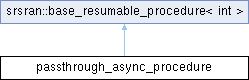

Async procedure implementation that just awaits another tasks and forwards its result. More...
Inheritance diagram for passthrough_async_procedure:

Public Member Functions | |
| passthrough_async_procedure (async_task< int > &t_) | |
| void | start () override |
| Initiation of the resumable task. | |
 Public Member Functions inherited from srsran::base_resumable_procedure< FutureType > Public Member Functions inherited from srsran::base_resumable_procedure< FutureType > | |
| void | operator() (detail::base_coro_frame< promise_type > &ctx) |
| Resume method. | |
Additional Inherited Members | |
| Public Types inherited from srsran::base_resumable_procedure< FutureType > | |
| using | future_type = FutureType |
| using | promise_type = typename FutureType::promise_type |
| using | result_type = typename FutureType::result_type |
| Protected Member Functions inherited from srsran::base_resumable_procedure< FutureType > | |
| template<typename Awaitable , typename Derived , typename... Args> | |
| void | async_await (Awaitable &&a, void(Derived::*action)(Args...)) |
| Called by resumable task to await Awaitable object to finish. | |
| template<typename R = result_type> | |
| detail::enable_if_void< R > | async_return () |
| Called on resumable task completion. | |
| template<typename U , typename R = result_type> | |
| detail::enable_if_nonvoid< R, void > | async_return (U &&r) |
| Called on resumable task completion with non-void return. | |
Detailed Description
Async procedure implementation that just awaits another tasks and forwards its result.
Member Function Documentation
◆ start()
|
inlineoverridevirtual |
Initiation of the resumable task.
Implements srsran::base_resumable_procedure< FutureType >.
The documentation for this class was generated from the following file:
- tests/unittests/support/async_task_test.cpp